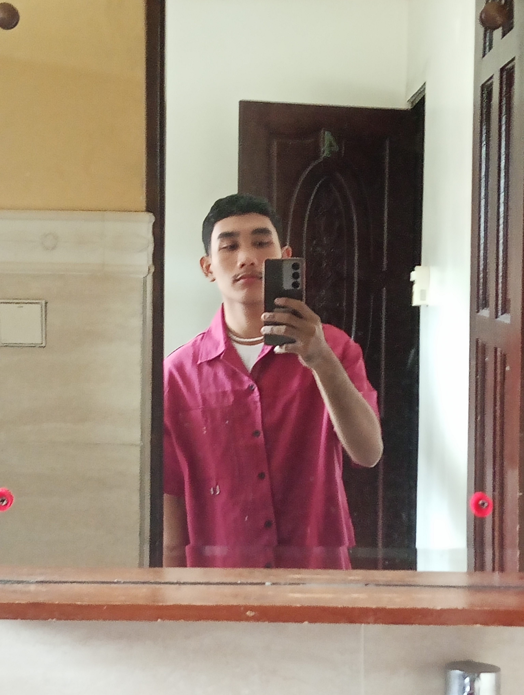
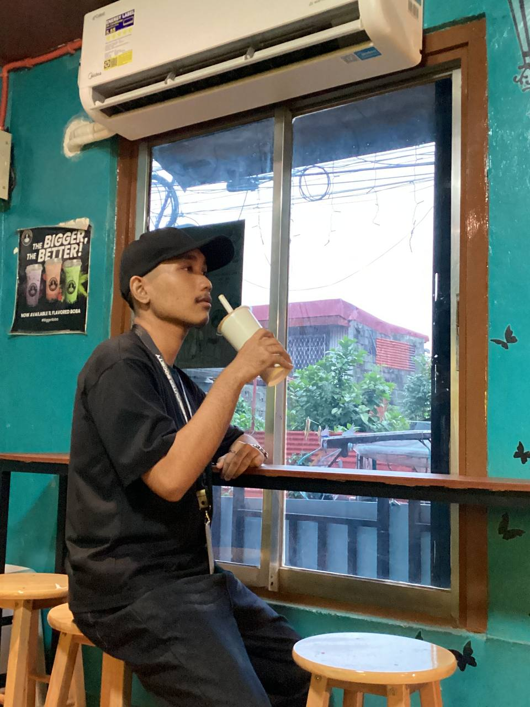

<section class="about-section section-panel" id="about">
  <div class="container-fluid content-wrap">
    <div class="about-stats" data-animate>
      <div><strong data-count="12">0</strong><span>Practice Builds</span></div>
      <div><strong data-count="14">0</strong><span>Core Tools</span></div>
      <div><strong data-count="100">0</strong><span>Responsive Focus</span></div>
    </div>

    <div class="row about-showcase g-4 g-lg-5">
      <div class="col-lg-6" data-animate>
        <p class="kicker">About Me</p>
        <h2>Turning Ideas Into <span>Experiences.</span></h2>
        <div class="about-photo about-photo-left"></div>
      </div>
      <div class="col-lg-6" data-animate>
        <div class="about-copy">
          <p>I am a BSIT student from Polytechnic University of the Philippines - Sto. Tomas Campus, focused on front-end development, responsive layouts, and clean interface design.</p>
          <p>My approach is simple: understand the user, organize the content clearly, and build pages that feel fast, readable, and professional across devices.</p>
        </div>
        <div class="about-photo about-photo-right"></div>
      </div>
    </div>
  </div>
</section>
